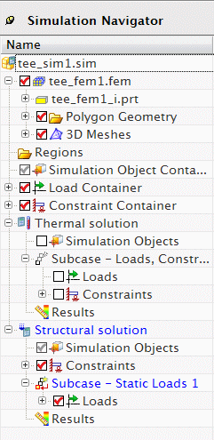

You can define multiple solutions in a single Simulation file. With multiple solutions, you can:
Explore how variations on boundary conditions or solution options affect the analysis results.
Reuse defined boundary conditions by dragging and dropping them among the defined solutions and steps or subcases.
Use the same material properties in all solutions.
